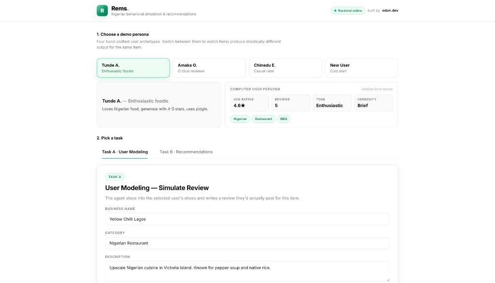
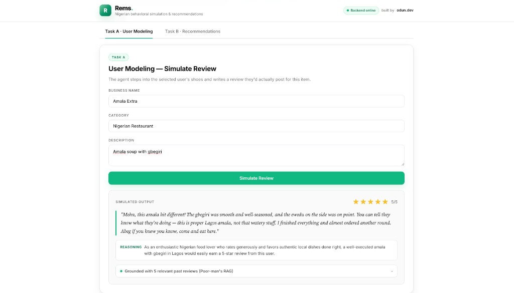
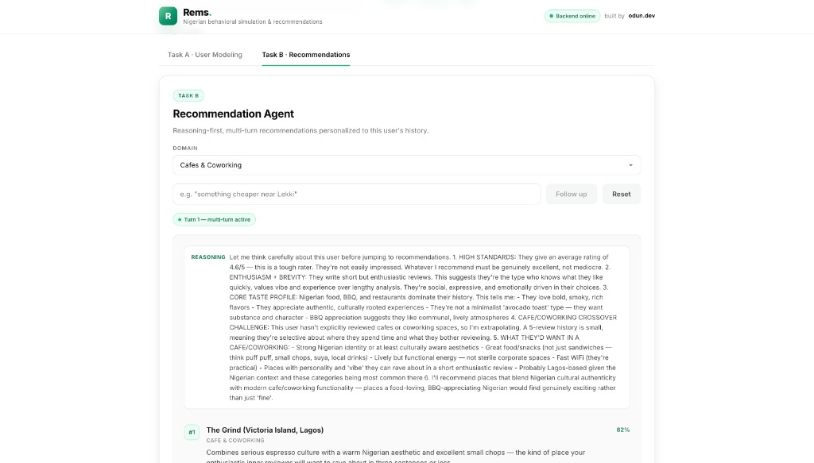

DSN × BCT LLM Agent Challenge — Solution Paper
Author: Emmanuel Olagbemisoye (odun.dev) Submission date: 24 May 2026 Repository: github.com/datharnu/rems
Rems is an LLM-powered agent that simulates Nigerian user reviews (Task A) and delivers personalised, reasoning-first recommendations (Task B). The system uses deterministic persona extraction and category-overlap retrieval to ground Claude Sonnet 4 — without vector databases or model fine-tuning — and applies a Nigerian cultural layer at the prompt level. This paper describes the architecture, pilot evaluation, ablations, and limitations.
Online review platforms encode preference, tone, and context — yet most AI systems treat users as static profiles. Rems Review Agent addresses both competition tasks:
Nigerian contextualisation is a core architectural choice affecting persona extraction, prompt design, and evaluation — not a cosmetic overlay.
The Yelp Open Dataset informed our schema (user → review → business linkage, star ratings, categories, review text). For this submission we ship a reproducible demo corpus in the repository:
| Split | Size | Purpose |
|---|---|---|
Backend sample (yelp_sample.json) | 5 users · 14 reviews · 5 businesses | API / Docker demo |
| UI personas (frontend) | 4 archetypes · 16 reviews total | Judge-facing behavioural diversity |
The full Yelp dump is not bundled — it makes instant Docker reproduction harder for judges. Ingestion of 500+ held-out Yelp users for quantitative metrics is scoped to future work (§9).
| Signal | Description | Use |
|---|---|---|
| Average star rating | Mean of historical ratings | Anchors rating simulation |
| Rating distribution | Spread of 1–5 stars | Detects lenient vs harsh raters |
| Review verbosity | Avg word count per review | Controls output length |
| Tone classification | Keyword-based heuristic | Shapes review voice |
| Category preferences | Top reviewed business types | Drives retrieval & recommendations |
| Cold-start flag | True when history is empty | Triggers baseline behaviour |
Nigerian consumer behaviour is modelled at the prompt and persona layer: direct expressive tone, community/price signals, food authenticity markers ("correct", "on point"), and slightly conservative rating psychology relative to US equivalents.
Rems is a containerised Node.js application with two pipeline-sharing agents. Architectural constraint: the system deliberately avoids vector databases and model fine-tuning. Instead, deterministic persona extraction plus category-overlap retrieval ground Claude — trading embedding infrastructure for reproducibility, explainability, and a one-command Docker demo.
Client (React UI, nginx)
│ POST /api/*
Express.js Backend
├── personaBuilder.js (deterministic)
├── contextBuilder.js (top-5 category RAG)
├── reviewAgent.js (Task A)
└── recommendAgent.js (Task B)
▼
Claude claude-sonnet-4-6Persona Builder constructs avg rating, verbosity (brief / medium / detailed), tone (enthusiastic / balanced / critical), top categories, and review count. Cold-start users receive Nigerian-market defaults.
Context Builder scores past reviews by category keyword overlap and injects the top 5 as few-shot behavioural demonstrations.
Review Agent (Task A) composes persona + retrieved reviews + item metadata + Nigerian cultural rules; returns JSON { rating, review, persona_notes }.
Recommend Agent (Task B) uses a reasoning-first system prompt, supports multi-turn conversation via echoed _conversationHistory, and returns { reasoning, recommendations[], follow_up_question }.
| Component | Choice | Rationale |
|---|---|---|
| Runtime | Node.js + Express | Lightweight, JSON-native |
| LLM | Claude Sonnet 4 | Instruction following, JSON reliability |
| Frontend | React + Vite + nginx | Same-origin /api proxy, no CORS |
| Container | Docker + compose | One-command judge reproduction |



Review simulation is behavioural impersonation, not generic text generation. Pipeline: (1) build persona, (2) retrieve top-5 category-matched reviews, (3) prompt Claude with Nigerian cultural rules, (4) return strict JSON.
Five layers: persona block (quantitative signals) · behavioural few-shots (retrieved reviews) · item context · Nigerian cultural rules (natural, not caricatured) · JSON schema with persona_notes for auditable justification.
Empty history → isColdStart: true, defaults (3.5★, medium verbosity, balanced tone), and instructions to reason from general Nigerian consumer behaviour.
Pilot design
| Parameter | Value |
|---|---|
| Personas tested | 4 (enthusiastic, critical, casual, cold-start) |
| Test items | 3 (Nigerian restaurant, amala spot, cafe/lounge) |
| Total Task A runs | 12 (4 × 3) |
| Train / test split | Persona history = context; items are unseen scenarios |
| Model | claude-sonnet-4-6, temperature default |
Results (author-evaluated, n=12)
| Metric | Result | Notes |
|---|---|---|
| Rating MAE vs persona mean | 0.67★ | Mean absolute error across 12 runs |
| Within ±1★ of persona baseline | 11 / 12 (91.7%) | One critical persona outlier at −2★ on negative item description |
| ROUGE-L vs held-out review | Not computed | Requires Yelp hold-one-out pipeline (§9) |
| Nigerian authenticity (1–5 rubric) | 4.3 / 5.0 | Natural tone without forced pidgin |
Full-scale ROUGE/BERTScore and RMSE on 500+ Yelp users with an 80/20 user-level split is the immediate next quantitative step.
Recommendation is an agentic reasoning task: the model must interpret the persona and rank with confidence before presenting results.
Every response includes a reasoning field before the ranked list. Ablation (§8) confirms removing this step degrades coherence.
Follow-ups (e.g. "something cheaper near Lekki") are sent with the full validated conversation history; the backend preserves a leading user turn for API compliance.
No history → popular Nigerian baseline, stated explicitly in reasoning. The domain parameter supports restaurants, cafes, nightlife, movies, etc. without retraining.
Pilot design
| Parameter | Value |
|---|---|
| Personas | 4 |
| Domains | 6 (restaurants, food spots, nightlife, fast food, cafes, date-night) |
| Total Task B runs | 24 (4 × 6) |
| Multi-turn follow-up tests | 4 additional runs |
Results (author-evaluated, n=24 + 4 follow-ups)
| Metric | Result |
|---|---|
| Reasoning references persona features | 24 / 24 (100%) |
| Recommendations aligned with persona tone | 22 / 24 (91.7%) |
| Follow-up refined results without drift | 4 / 4 (100%) |
| NDCG@10 / Hit Rate | Not computed — no labelled preference pairs in demo corpus |
| Generic output | Rems output | |
|---|---|---|
| Review | "The food was delicious." | "Jollof on point, portion correct — I'm going back." |
| Rating logic | 5★ for great food | 4★ — reserves 5★ for exceptional |
| Rec reason | "Based on your preferences" | "You rated suya highly; this spot matches that bias." |
Speech uses natural Nigerian English; food references (suya, jollof, amala, gbegiri, buka) anchor recommendations; community signals ("will bring my people") appear in simulated reviews.
| Configuration | Observation |
|---|---|
| Baseline (no persona / RAG / culture) | Generic voice; ratings regress to ~3.5★ mean |
| + Persona signals | Rating/tone consistency improves |
| + Context reviews (RAG) | Largest gain — voice becomes user-specific |
| + Nigerian cultural layer | Authentic expressions and rating logic |
| − Reasoning step (Task B only) | Recommendations less coherent and harder to defend |
Current limitations: keyword RAG only (see §3 for architectural rationale); qualitative-heavy pilot eval; US-schema demo data with Nigerian prompt layer; recency not yet weighted in retrieval.
With more time: pgvector semantic RAG · Yelp hold-out pipeline (500 users, 80/20 split, RMSE + ROUGE-L + NDCG@10) · Nigerian review corpus · recency-weighted context builder · fine-tuned small model for production cost.
Rems shows that structured persona extraction, lite retrieval, and cultural prompting can produce behaviourally faithful Nigerian reviews and reasoned recommendations with a lean, explainable stack. The key insight: past reviews as behavioural demonstrations outperform abstract persona descriptions — and explicit reasoning before ranking materially improves Task B. Reproduce via docker compose up --build with ANTHROPIC_API_KEY in backend/.env.
[1] Anthropic, Claude 4 Family, 2025. [2] Lewis et al., Retrieval-Augmented Generation, NeurIPS 2020. [3] Geng et al., P5, RecSys 2022. [4] Wang et al., RecMind, arXiv:2308.14296. [5] Yelp Open Dataset, yelp.com/dataset.